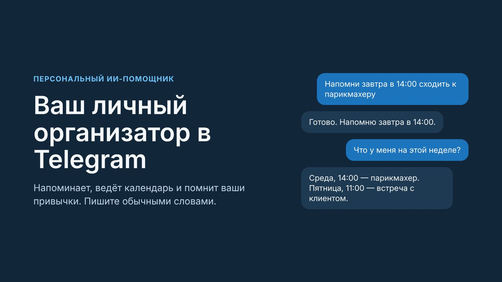

Напоминания, календарь и память, которая вас понимает. Пишите как человеку, помощник сделает остальное.
Открыть в Telegram Смотреть видеоМинута видео: от просьбы в чате до готового напоминания.
Всё в привычном мессенджере, без установки приложений.
Скажите время обычными словами. Помощник напомнит и предупредит заранее.
Добавляет, переносит и показывает события. Находит свободное окно.
Запоминает важное о вас, но только после вашего подтверждения.
Со временем подстраивается под ваш ритм и предлагает то, что вам подходит.
В расширенной версии отвечает по вашим документам и называет источник.
Подробнее о возможностях, версиях и приватности.

Презентация на русском языке.
На сайте можно будет управлять памятью, документами, настройками и тарифом, а не только через Telegram.